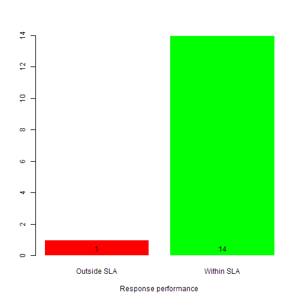

Help desk and call centers that respond to and resolve service requests have a need to know and report on their performance.
Dinesh
Help desk and call centers that respond to and resolve service requests have a need to know and report on their performance.
The Response performance Shiny app reports a help desk's performance on the requests it receives measured against a set service level agreement (SLA).
Given the number of days to respond to a request (SLA), it provides the count of requests that are within the SLA days (in green) and the ones outside (in red) in a simple bar plot.
The app output for a response SLA of 2 days is shown below. An interactive version is available at the following link in shinyapps.io response performance

Error in b$show: $ operator is invalid for atomic vectors
The Response performance app provides an easy way to report performance of a help desk against a given reponse SLA.